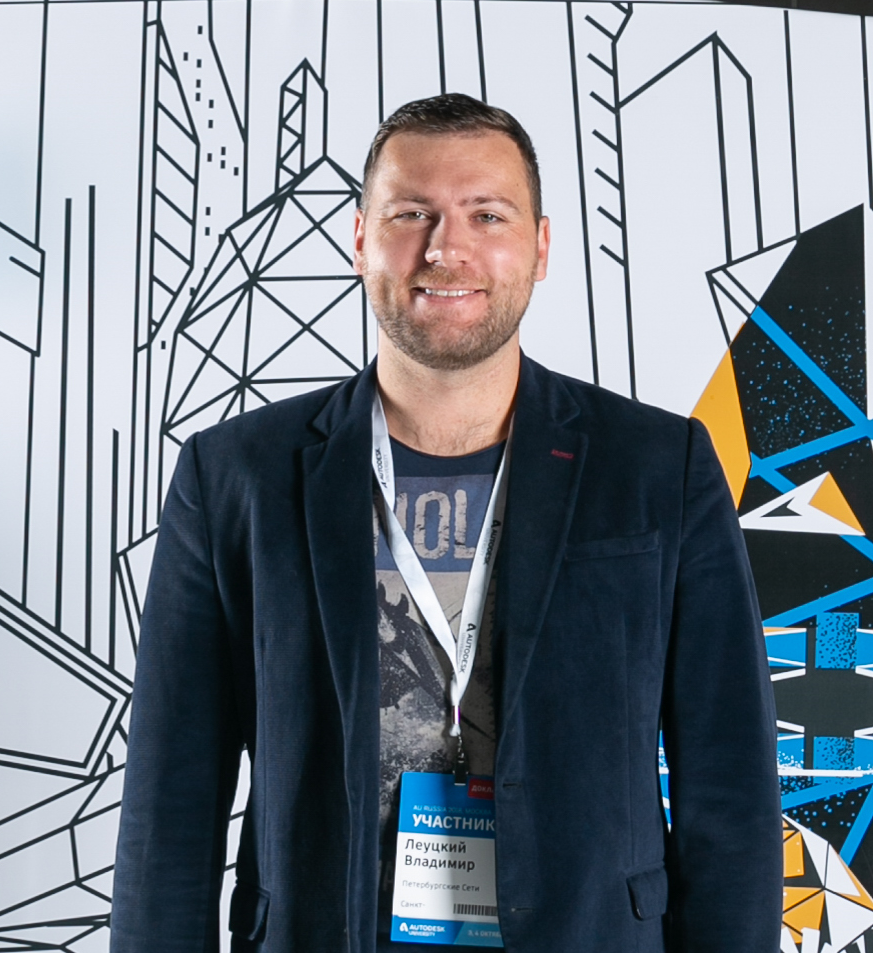
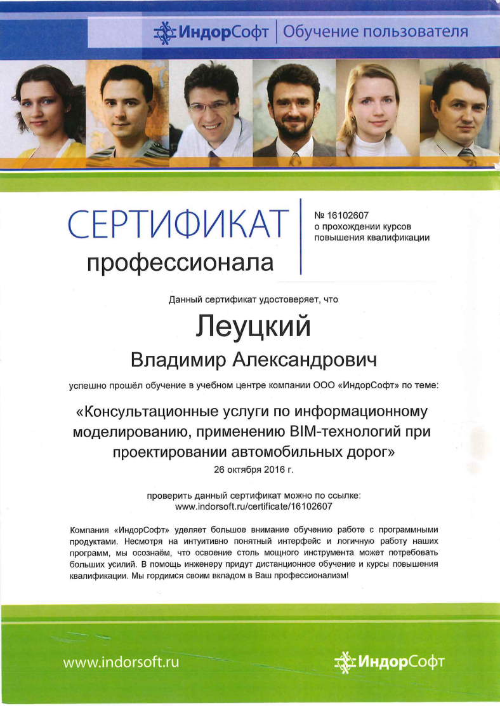
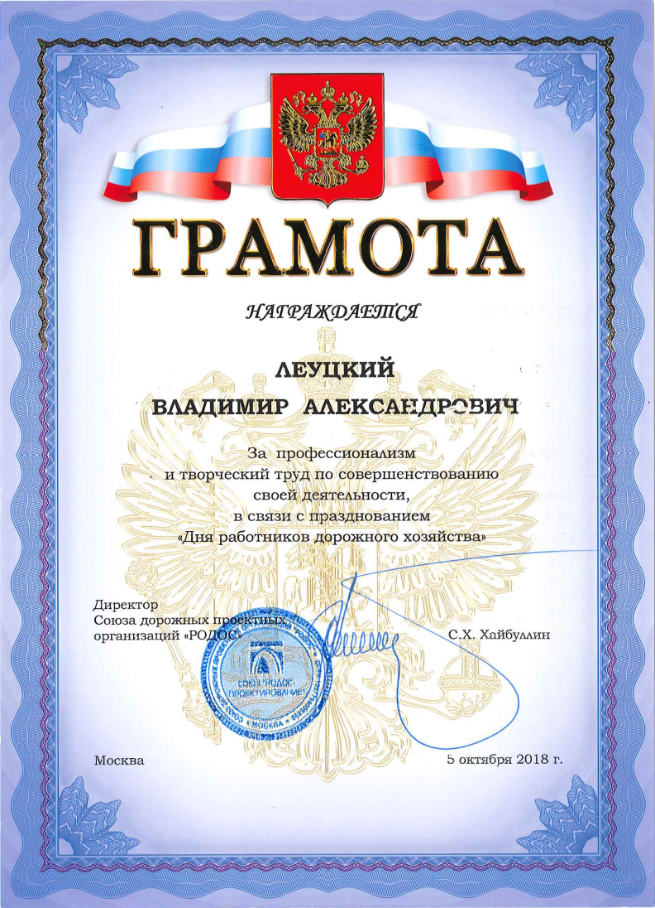

Об авторе
Владимир Леуцкий
Не просто программист, а инженер-проектировщик с опытом более 10 лет. Я прошел путь от чертежника до BIM-менеджера и разработчика, поэтому точно знаю, где «болит» у специалистов при работе в Civil 3D.
Моя специализация — автоматизация процессов проектирования инфраструктуры (дороги, сети) и внедрение BIM-технологий на уровне предприятия. А также занимаюсь со своей командой подъемом BIM моделей по 2D чертежам, с прохождением экспертизы.
10+
Лет опыта в Civil 3D
C#
Собственные решения

Квалификация подтверждена:

2011
Autodesk Certified

2016
BIM Дороги

2017
BIM для ГИПов

2018
Грамота РОДОС